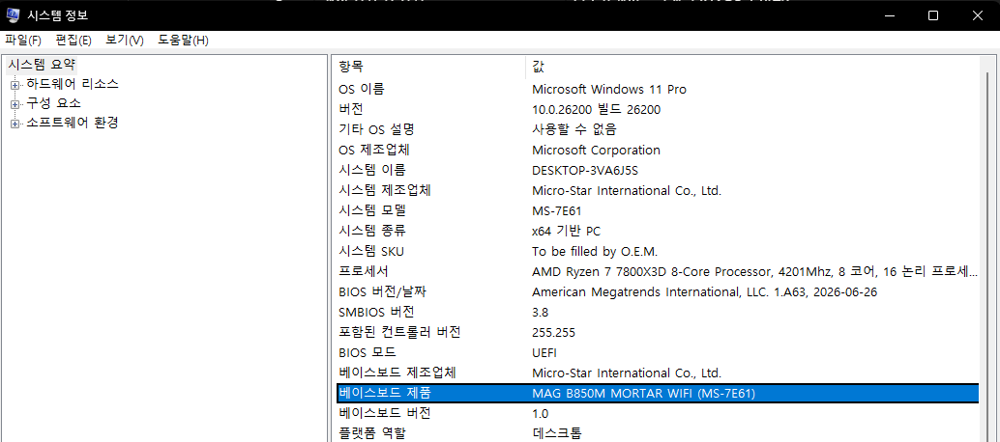
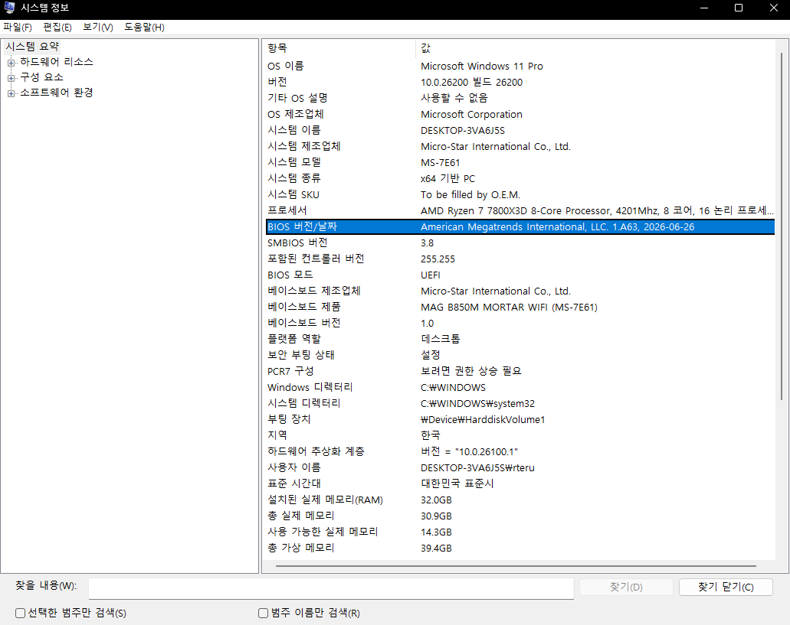
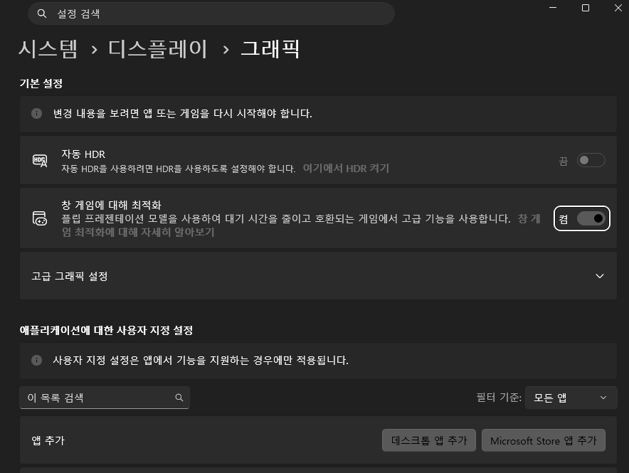
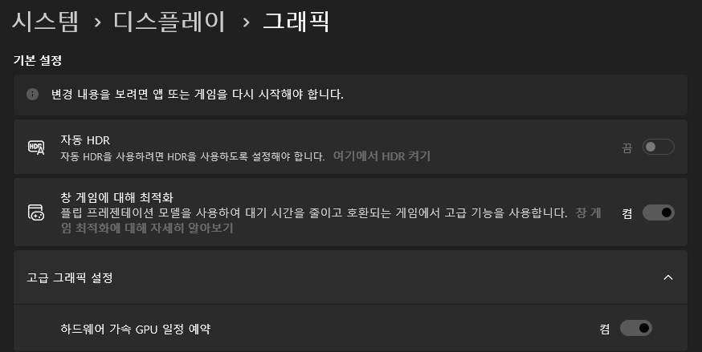
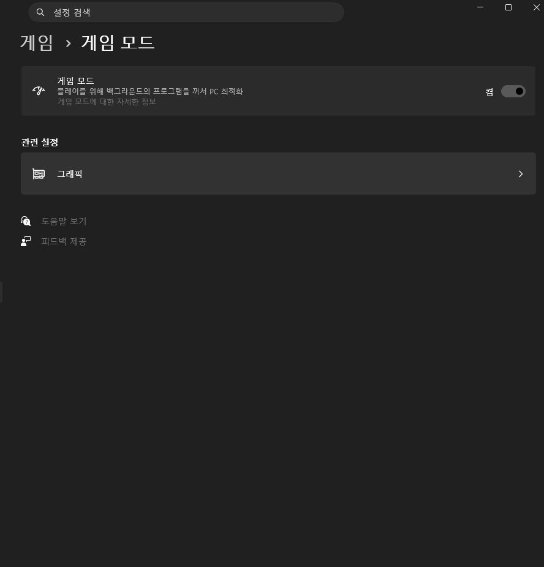
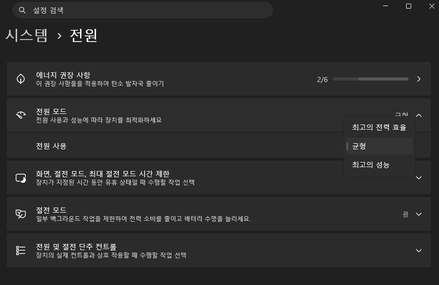
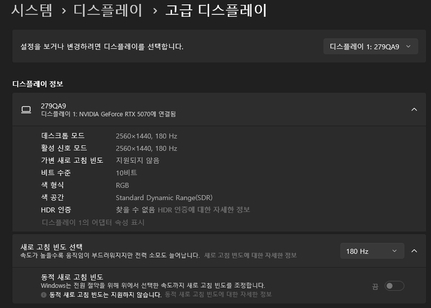

게임 시작 전 PC 설정 총집합

혹시 새 PC를 사셨거나 포맷을 새로 하셨는데 게임 성능을 최대로 끌어내려면 뭘 확인해야 하는지 감이 안 잡히시나요? 아니면 지금까지 한 번도 이런 설정을 안 만져봐서 혹시 놓친 게 있는 건 아닐까 싶으신가요? 그렇다면 이 체크리스트가 도움이 될 거예요.
게임을 시작하기 전에 딱 한 번만 점검해두면 계속 도움이 되는 설정들을 모았습니다. 무슨 뜻인지 몰라도 괜찮으니, 아래 순서대로 그대로 따라오시면 됩니다.
① 윈도우 업데이트와 그래픽 드라이버부터 최신으로 맞추세요.
- 키보드에서 윈도우 키를 누르고 "Windows Update"라고 입력한 뒤 엔터
- "업데이트 확인" 버튼을 눌러서 대기 중인 업데이트가 있으면 전부 설치
- 그래픽카드 드라이버는 제조사 사이트에서 받으세요 — NVIDIA는 nvidia.com/drivers, AMD는 amd.com/support, Intel은 intel.com/content/www/kr/ko/support 에서 본인 그래픽카드 모델명을 검색
② 메인보드 모델과 바이오스 버전을 확인하세요. 오디오·랜(LAN) 드라이버는 반드시 메인보드 제조사 홈페이지에서 받아야 하고, 바이오스도 너무 오래됐다면 업데이트가 필요할 수 있습니다.
- 윈도우 키를 누르고 "시스템 정보"를 검색해서 실행
- 왼쪽 "시스템 요약"에서 "베이스보드 제품" 항목을 확인하세요 — 이게 실제 메인보드 모델명입니다 (예: MAG B850M MORTAR WIFI)
- 같은 화면에서 "BIOS 버전/날짜" 항목도 함께 확인해두세요 — 메인보드 제조사 홈페이지에서 이 날짜보다 최신 바이오스가 있는지 비교하면 업데이트가 필요한지 판단할 수 있습니다
- 확인한 모델명으로 제조사(ASUS, MSI, 기가바이트 등) 홈페이지에서 오디오·랜 드라이버, 필요하면 바이오스 업데이트 파일을 받으세요


③ 디스플레이 그래픽 설정에서 두 가지를 확인하세요.
- 설정 > 시스템 > 디스플레이 > 그래픽으로 이동
- "창 게임에 대해 최적화" 스위치를 확인하세요 — 대부분의 최신 게임에서는 켜두는 게 유리하지만, 오래된 게임에서 화면이 이상하게 나온다면 꺼서 비교해보세요
- 같은 페이지에서 "고급 그래픽 설정"을 눌러 펼치면 "하드웨어 가속 GPU 일정 예약(HAGS)"이 나옵니다

HAGS는 그래픽카드 세대에 따라 유불리가 갈립니다. GTX 10 시리즈·RTX 시리즈(NVIDIA), RX 5000·6000 시리즈 이상(AMD)처럼 비교적 최신 그래픽카드는 대기 시간(입력 지연)이 줄어드는 효과를 보는 경우가 많아 켜두는 걸 추천합니다. 반면 이보다 오래됐거나 VRAM이 8GB 이하로 낮은 그래픽카드는 오히려 끊김·텍스처 깨짐이 생기는 경우가 있어 끄는 걸 추천합니다. 프레임(FPS) 자체는 켜고 끄고 큰 차이가 없는 경우가 많으니, 애매하면 최근 게임을 몇 분씩 켜서 두 상태를 직접 비교해보고 더 안정적인 쪽으로 두세요 (설정을 바꾸면 재부팅을 요구할 수 있습니다).

④ 게임 모드를 켜두세요.
- 설정 > 게임 > 게임 모드로 이동
- 스위치를 켜짐으로 설정

⑤ 전원 관리 모드를 고성능 쪽으로 설정하세요.
- 설정 > 시스템 > 전원으로 이동
- "전원 모드"를 "최고의 성능" 또는 "고성능"으로 변경 (노트북은 배터리가 빨리 닳을 수 있으니, 충전기를 연결한 상태에서 게임하는 걸 추천합니다)

⑥ 모니터 해상도와 주사율이 제대로 잡혀있는지 확인하세요 — 둘 다 기본값이 실제 스펙보다 낮게(해상도가 낮거나 60Hz) 잡혀있는 경우가 은근히 많습니다.
- 설정 > 시스템 > 디스플레이 > 고급 디스플레이로 이동
- "디스플레이 정보"의 데스크톱 모드 해상도가 모니터 실제 최대 해상도(예: 2560×1440)와 같은지 확인하고, 낮게 되어 있다면 최대치로 변경 — 낮으면 화면이 흐릿하게 보입니다
- "새로고침 빈도 선택"이 모니터 최대 주사율(144Hz, 165Hz, 180Hz 등)로 되어 있는지 확인하고, 60Hz로 되어 있다면 실제 스펙에 맞게 변경



%EC%9D%B4%3C%2Ftext%3E%3Ctext%20x%3D%22200%22%20y%3D%22176%22%20font-family%3D%22Inter%2Csans-serif%22%20font-size%3D%2226%22%20font-weight%3D%22800%22%20fill%3D%22%231B64DA%22%20text-anchor%3D%22middle%22%3E%EC%95%88%20%EB%B3%B4%EC%9D%BC%20%EB%95%8C%3C%2Ftext%3E%3C%2Fsvg%3E)